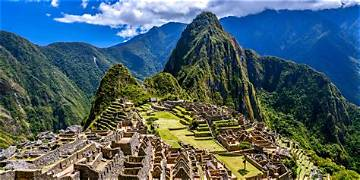

Nombre: Machu Picchu
País: Perú
Año de construcción: Aproximadamente 1450 d. C.
Machu Picchu fue construida durante el Imperio Inca bajo el mandato del emperador Pachacútec. Está ubicada en la cordillera de los Andes y permaneció oculta durante siglos hasta que fue dada a conocer al mundo por el explorador Hiram Bingham en 1911. Hoy es uno de los destinos turísticos más importantes del planeta.
Las piedras fueron colocadas con tanta precisión que no fue necesario utilizar cemento. Incluso después de numerosos terremotos, la ciudad permanece prácticamente intacta.
Siguiente Maravilla →